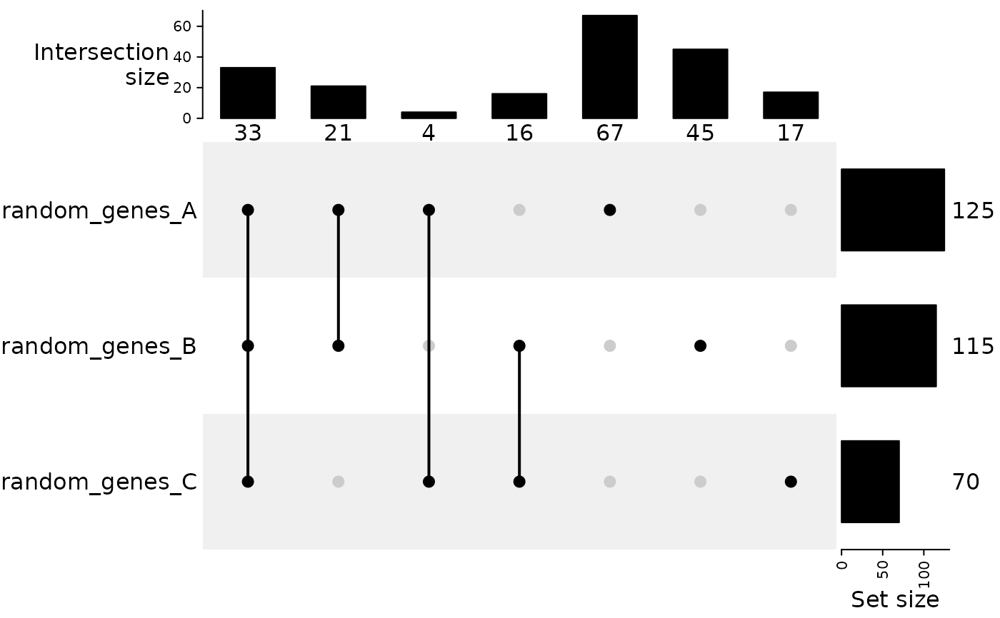
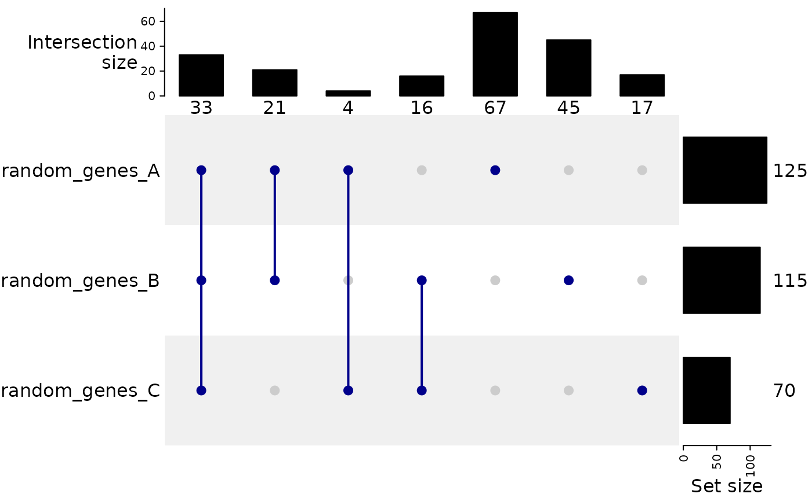
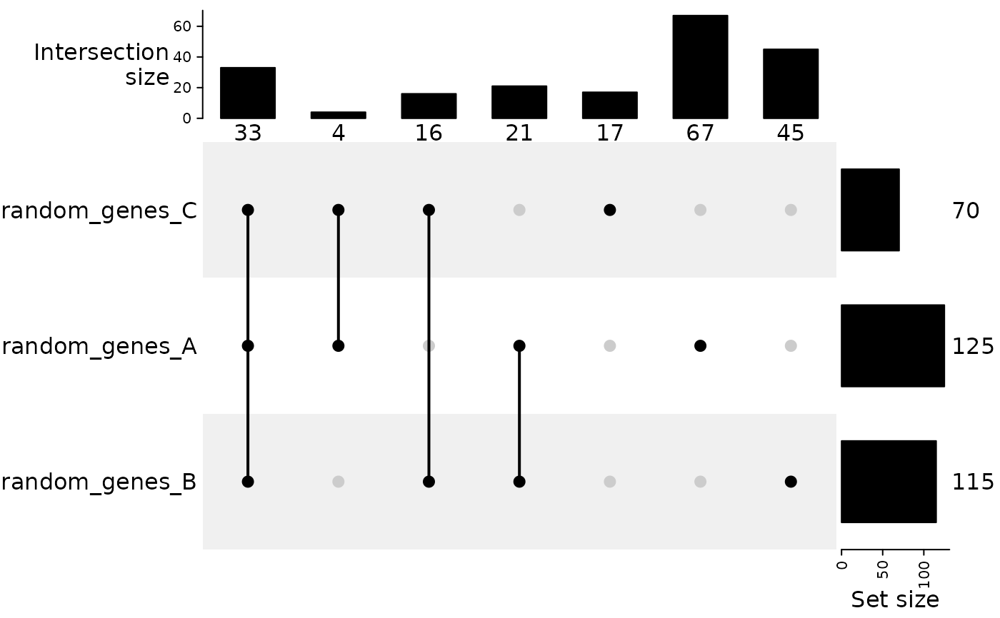

This function creates an UpSet plot using the ComplexHeatmap package to
visualize intersections across multiple sets.
Supports both GenomicOverlapsResult and SetOverlapsResult objects.
Arguments
- overlap_object
A
GenomicOverlapsResultorSetOverlapsResultobject returned bycomputeOverlaps.- customSetOrder
Optional. A vector specifying the order of sets to display on the UpSet diagram. The vector should contain either numeric indices (corresponding to the sets in the overlap object) or character names (matching the set names). If
NULL(default), sets are displayed in decreasing order of their size (set_size()).
Value
An UpSet plot object generated by ComplexHeatmap::UpSet.
Examples
# Example with gene sets (built-in dataset)
data(gene_list)
res_sets <- computeOverlaps(gene_list)
# Default order (sets sorted by size)
plotUpSet(res_sets)

# Custom order by names
plotUpSet(res_sets, customSetOrder = c("random_genes_C",
"random_genes_A",
"random_genes_B"))

# Example with genomic regions (built-in dataset)
data(a549_chipseq_peaks)
res_genomic <- computeOverlaps(a549_chipseq_peaks)
plotUpSet(res_genomic)
